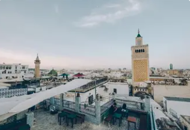
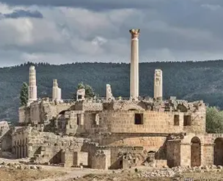
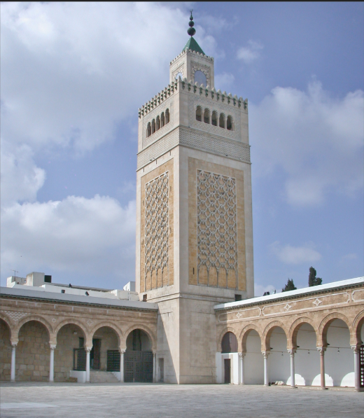

La Porte de la Capitale

La Manouba est un gouvernorat situé dans le nord-est de la Tunisie, limitrophe du Grand Tunis. C'est une région qui allie développement urbain moderne et zones agricoles traditionnelles.
La ville de la Manouba, chef-lieu du gouvernorat, est devenue un pôle universitaire et éducatif majeur avec plusieurs institutions d'enseignement supérieur prestigieuses.
Le gouvernorat se distingue par son dynamisme économique, son patrimoine archéologique riche et sa position stratégique aux portes de la capitale tunisienne.
Abrite l'Université de la Manouba et plusieurs grandes écoles, formant des milliers d'étudiants chaque année dans divers domaines.
Importante cité romaine appelée Oudhna, site archéologique majeur avec amphithéâtre, capitole et magnifiques mosaïques bien préservées.
Zone agricole productive cultivant céréales, oliviers et agrumes, contribuant significativement à l'économie régionale.
Important pôle industriel avec de nombreuses zones d'activité économique contribuant au développement du Grand Tunis.

Site archéologique romain exceptionnel du IIe siècle, comprenant un amphithéâtre pouvant accueillir 16 000 spectateurs, un capitole imposant et de superbes mosaïques dont la célèbre mosaïque des Laberii.

Mosquée moderne et emblématique de la ville, symbole du développement urbain et religieux du gouvernorat. Architecture contemporaine alliant tradition et modernité.